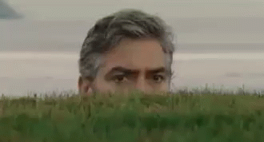

| It's 2020 and the Coronavirus has swept the globe. No one saw it coming. Or was it actually foretold? Doesn't matter because it's here. What do we do now? Here are some ways to survive the pandemic. |
Newton's First Law of Motion: "Every object persists in its state of rest or uniform motion in a straight line unless it is compelled to change that state by forces impressed on it
Basically if we keep the Virus-Who-Must-Not-Be-Named in motion, homeboy will stay in motion until it's acted on by some other force. Maybe that force is a mask or maybe its the Force "that resides in all life forms and binds the galaxy together." The point is, it needs to be stopped. Staying six feet apart can help because word on the street is Covfefe-19 has no bunnies without some help from the wind. Stay upwind (always sage advice) and away from those not from your household.
|
Now if you are ones of those people who absolutely can't stay away from others, please don't act as if binging on Netflix or any other streaming site hasn't be an excuse once or twice to avoid humanity. Catch up on some documentaries and slow climate change. The sea turtles and polar bears will thank you. Let it go üé∂‚ùÑÔ∏è, let the non-household memberes go and we will all be safer. |
|  | Also remember, these are some really hard times. While some can say the pandemic hasn't altered too much of their daily lives, for others it has been down right earth-shattering. Check to see if someone can use a helping hand or some groceries. Maybe a phone call or a Zoom Game Night. Maybe some people just need a, "Hey! Just want you to know you crossed my mind. Hope everything's good [enough]." We're apart so we can survive and that isn't easy. The point is that we reach the other side of this (however that may look) safe, healthy and sane. |